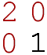

|
 |
 |
|
|
|

The
Three Pomegranate Network for 2001 is made up of two successive
activities around the common theme of a "marketplace
without borders".
|
|
|
| The
first activity consists of research exercises through
which students and teachers explore e-commerce sites
on the Web. Through a variety of short exercises, they
are introduced both to search techniques and basic concepts
of electronic commerce. Students in each school collaborate
and post their findings over the course of several sessions. |
|
| |
|
|
|
The
goal of the second activity is to have the students
actually build an e-commerce site with products from
different regions of Armenia. Students in Armenia
find and document hand-made and other locally produced
items from their regions. They collaborate closely
with diaspora students, who are in charge of market
reseach and promotion. The activity culminates with
the launch of an actual online store. The general
public votes for desirable products as a simulation
of commercial activity.
|
|
| |
|
|
| These
activities foster cultural awareness and link Armenian
students and teachers with their Global peers. Just
as importantly, they are designed to teach skills such
as online collaboration, language proficency, critical
thinking, Web design and research methods.
By giving participants creative real-life tasks, 3PN
engages students and teachers in a natural learning
process. |
|
Contact
us . Explore 3PN '98, '99 & '00
. Go to the 3noor.org home
. Visit the E4D Institute

|
|
|